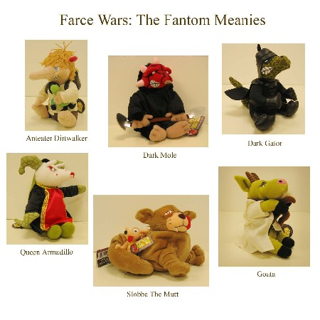

Donated by NYLine staffer and PR Princess Suzanne Sousa, the next item in our eBay auction for the Starlight Starbright Children's Foundation is for anyone who likes their stuffed animals filled with the dark side.
Up for auction is the entire collection of six Farce Wars: The Fantom Meanies Plush toys.
Leading the edgy Farce Wars fleet is merciless Dark Gator - a reptilian creature cloaked in protective black suit and helmet. Joining him is Slobba the Mutt, an overweight canine gangster up to no good with Chihuahua Crud in clutch (poking fun at a famous fast food promotion). Heroine Queen Armadillo and an excessively wrinkled Goata augment the super-galactic battalion. Completing the plush line are villainous Dark Mole with a combative, double-ended shovel, and innocent Anteater Dirtwalker - with Fantom Meanie action figure in hand.
Each of these loveable beanbag plush toys is in perfect condition with tags intact. The sizes vary from 6" (Anteater Dirtwalker) to 9" (Slobba the Mutt). Don't miss this rare opportunity to mock Star Wars in the cutest, most cuddly style!
Another auction update will be coming to your galaxy shortly! Take a glance at the other items up for bids at the auction page and in the picture gallery!